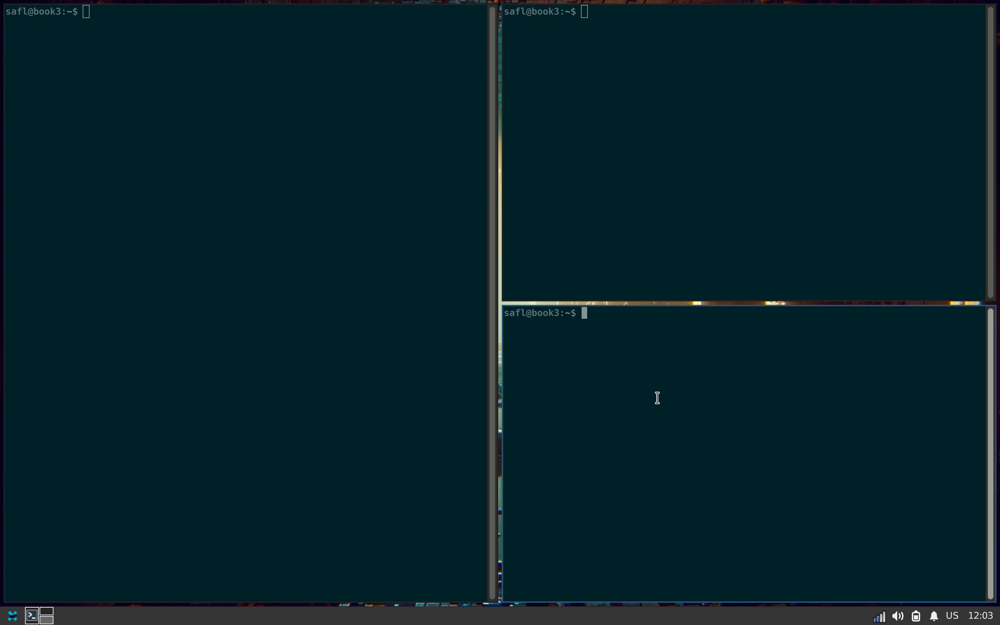
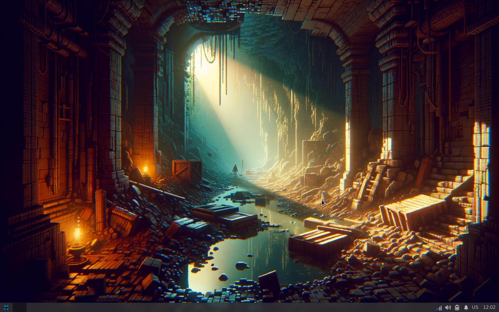
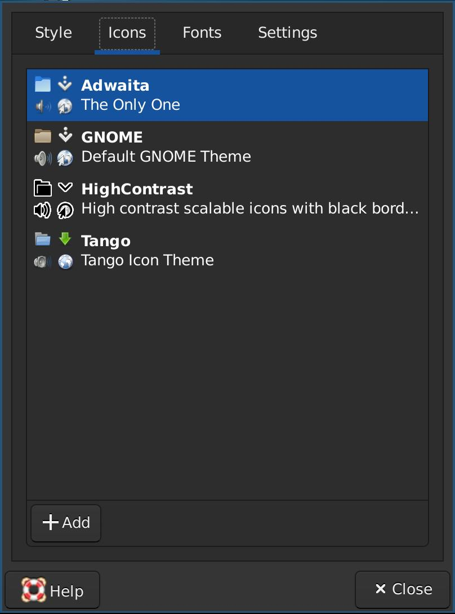
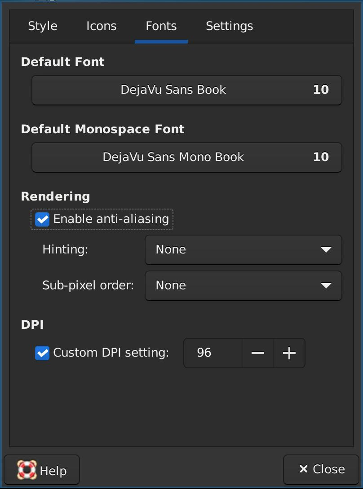

Desktop Environment¶
There are a ton options when it comes to desktop environments including GNOME, KDE, with lightweight derivatives such as XFCE, MATE and Cinnamon.
Lightweight vs heavyweight is often measured in terms not just of window management and composition but the entire offering of the desktop environment provided tools and utilizes are such as network-managers, file-browsers, screensavers, session-managers, key-chains, printer-configurators, system configuration, and the list goes on.such as the inclusion of as well as the supporting libraries for gui components / widgets.
In addition to choosing an existing desktop environment then another approach is combining different software projects, such as replacing the window-manager, or adding another compositor, etc.
All of the above are based on the X Window System, a replacement for which has been underway for 10+ years called Wayland.
My desktop environment is slightly diy in the form of a modification of the lighweight desktop environment XFCE. With the window-manager replaced with i3, addition of compositor picom, and the launcher rofi. The following illustrates what the XFCE desktop environment looks like before and after these modifications.
{kind=link}
{kind=link}
The following subsections documents the packages to install and the configuration files used.
Modications¶
The following modifications rely on configuration-files to a higher extend that the appearance configuration of XFCE.
Window Manager¶
For the core task of window management one is also spoiled for choice, to name a few then; FluxBox, OpenBox, Awesome, i3, and xmonad. A killer feature is tiling.
I went with i3 since it works very well with XFCE, providing the entire XFCE desktop environment enhanced with the awesome tiling capabilties of i3. Additionally, then the configuration is compatible with sway which is convenient if/when I move from Xorg to Wayland.
Install it with:
sudo apt-get install i3
To configure i3 then edit the configuration file at
~/.config/i3/config. For reference then the one I am using is available
below in full form.
# This file has been auto-generated by i3-config-wizard(1).
# It will not be overwritten, so edit it as you like.
#
# Should you change your keyboard layout some time, delete
# this file and re-run i3-config-wizard(1).
#
# i3 config file (v4)
#
# Please see https://i3wm.org/docs/userguide.html for a complete reference!
set $mod Mod4
# Font for window titles. Will also be used by the bar unless a different font
# is used in the bar {} block below.
#font pango:monospace 10
# This font is widely installed, provides lots of unicode glyphs, right-to-left
# text rendering and scalability on retina/hidpi displays (thanks to pango).
font pango:DejaVu Sans Mono 10
# Start XDG autostart .desktop files using dex. See also
# https://wiki.archlinux.org/index.php/XDG_Autostart
exec --no-startup-id dex --autostart --environment i3
# Window gaps, makes the tiled windows feel more "airy"
gaps inner 20px
# picom compositor for windows with rounded corners and blurred transparency
exec --no-startup-id picom -b --experimental-backends
# Wallpapers
exec --no-startup-id feh --bg-scale --zoom fill /home/safl/git/safl.github.com/backdrops/pixelart02.webp
# GDK_SCALE is set, but this does not affect non-GTK thus setting this
exec --no-startup-id xrandr --dpi 196
# Borders around windows, this helps put focus on the active window
for_window [class="^.*"] border pixel 4
# The combination of xss-lock, nm-applet and pactl is a popular choice, so
# they are included here as an example. Modify as you see fit.
# xss-lock grabs a logind suspend inhibit lock and will use i3lock to lock the
# screen before suspend. Use loginctl lock-session to lock your screen.
exec --no-startup-id xss-lock --transfer-sleep-lock -- i3lock --nofork
# NetworkManager is the most popular way to manage wireless networks on Linux,
# and nm-applet is a desktop environment-independent system tray GUI for it.
exec --no-startup-id nm-applet
# Use pactl to adjust volume in PulseAudio.
set $refresh_i3status killall -SIGUSR1 i3status
bindsym XF86AudioRaiseVolume exec --no-startup-id pactl set-sink-volume @DEFAULT_SINK@ +10% && $refresh_i3status
bindsym XF86AudioLowerVolume exec --no-startup-id pactl set-sink-volume @DEFAULT_SINK@ -10% && $refresh_i3status
bindsym XF86AudioMute exec --no-startup-id pactl set-sink-mute @DEFAULT_SINK@ toggle && $refresh_i3status
bindsym XF86AudioMicMute exec --no-startup-id pactl set-source-mute @DEFAULT_SOURCE@ toggle && $refresh_i3status
# Use Mouse+$mod to drag floating windows to their wanted position
floating_modifier $mod
# move tiling windows via drag & drop by left-clicking into the title bar,
# or left-clicking anywhere into the window while holding the floating modifier.
tiling_drag modifier titlebar
# start a terminal
bindsym $mod+Return exec i3-sensible-terminal
# kill focused window
bindsym $mod+Shift+q kill
# Launcher
bindsym $mod+space exec "rofi -modi drun,run -show-icons -show drun -font 'monospace 32'"
# change focus
bindsym $mod+Left focus left
bindsym $mod+Down focus down
bindsym $mod+Up focus up
bindsym $mod+Right focus right
# move focused window
bindsym $mod+Shift+Left move left
bindsym $mod+Shift+Down move down
bindsym $mod+Shift+Up move up
bindsym $mod+Shift+Right move right
# split in horizontal orientation
bindsym $mod+h split h
# split in vertical orientation
bindsym $mod+v split v
# enter fullscreen mode for the focused container
bindsym $mod+f fullscreen toggle
# change container layout (stacked, tabbed, toggle split)
#bindsym $mod+s layout stacking
#bindsym $mod+w layout tabbed
bindsym $mod+e layout toggle split
# toggle tiling / floating
bindsym $mod+Shift+space floating toggle
# change focus between tiling / floating windows
bindsym $mod+Mod1+space focus mode_toggle
# focus the parent container
bindsym $mod+a focus parent
# focus the child container
#bindsym $mod+d focus child
# Define names for default workspaces for which we configure key bindings later on.
# We use variables to avoid repeating the names in multiple places.
set $ws1 "1"
set $ws2 "2"
set $ws3 "3"
set $ws4 "4"
set $ws5 "5"
set $ws6 "6"
set $ws7 "7"
set $ws8 "8"
set $ws9 "9"
set $ws10 "10"
# switch to workspace
bindsym $mod+1 workspace number $ws1
bindsym $mod+2 workspace number $ws2
bindsym $mod+3 workspace number $ws3
bindsym $mod+4 workspace number $ws4
bindsym $mod+5 workspace number $ws5
bindsym $mod+6 workspace number $ws6
bindsym $mod+7 workspace number $ws7
bindsym $mod+8 workspace number $ws8
bindsym $mod+9 workspace number $ws9
bindsym $mod+0 workspace number $ws10
# move focused container to workspace
bindsym $mod+Shift+1 move container to workspace number $ws1
bindsym $mod+Shift+2 move container to workspace number $ws2
bindsym $mod+Shift+3 move container to workspace number $ws3
bindsym $mod+Shift+4 move container to workspace number $ws4
bindsym $mod+Shift+5 move container to workspace number $ws5
bindsym $mod+Shift+6 move container to workspace number $ws6
bindsym $mod+Shift+7 move container to workspace number $ws7
bindsym $mod+Shift+8 move container to workspace number $ws8
bindsym $mod+Shift+9 move container to workspace number $ws9
bindsym $mod+Shift+0 move container to workspace number $ws10
# reload the configuration file
bindsym $mod+Shift+c reload
# restart i3 inplace (preserves your layout/session, can be used to upgrade i3)
bindsym $mod+Shift+r restart
# exit i3 (logs you out of your X session)
bindsym $mod+Shift+e exec "i3-nagbar -t warning -m 'You pressed the exit shortcut. Do you really want to exit i3? This will end your X session.' -B 'Yes, exit i3' 'i3-msg exit'"
# resize window (you can also use the mouse for that)
mode "resize" {
# These bindings trigger as soon as you enter the resize mode
bindsym Left resize shrink width 10 px or 10 ppt
bindsym Down resize grow height 10 px or 10 ppt
bindsym Up resize shrink height 10 px or 10 ppt
bindsym Right resize grow width 10 px or 10 ppt
# back to normal: Enter or Escape or $mod+r
bindsym Return mode "default"
bindsym Escape mode "default"
bindsym $mod+r mode "default"
}
bindsym $mod+r mode "resize"
Compositor¶
To get transparent windows, with background-blur for better readability, rounded corners and other eye-candy, then a compositor is needed. I went with picom, the compositor formerly named compton.
A picture says more than a 1000 words… so… have a look here. From left to right, screenshots showing the desktop environment without and then with picom running. I eventually dropped rounded-corners as it did not look “natural”.
 {kind=link}
{kind=link}
{kind=link}
In addition to the visual changes as shown above, then using picom has
the effect of aleviating tearing issues that may arise during regular use
of XFCE. Install with:
sudo apt-get install picom
Configure picom like by editing ~/.config/picom.conf:
# basic configuration
backend = "glx";
vsync = true;
glx-copy-from-front = true;
glx-swap-method = 2;
xrender-sync = true;
xrender-sync-fence = true;
blur: {
method = "dual_kawase";
strength = "5.0";
};
# transparancy settings for i3
opacity-rule = [
"0:_NET_WM_STATE@:32a *= '_NET_WM_STATE_HIDDEN'"
];
Then launch it via the i3 config ~/.config/i3/config:
exec --no-startup-id picom -b --experimental-backends
Backgrounds / wall-papers¶
The cli-tool feh gets the job done, another popular tool is nitrogen. I
chose feh since the wallpapers I have:
{kind=link}
{kind=link}
{kind=link}
{kind=link}
are in .webp format and compresses great. Back to the point, nitrogen
does not support .webp but feh does.
sudo apt-get install feh
Launch feh via i3 by opening ~/.config/i3/config to
and adding:
exec --no-startup-id feh --bg-scale --zoom fill /home/safl/git/safl.github.com/backdrops/pixelart02.webp
Launcher¶
XFCE already has a launcher that is, the Whisker Menu, at it is actually very awesome. However, it doesn’t work as well in the i3 context, since it is treated as a regular window.
sudo apt-get install rofi
Then launch it via the i3 config ~/.config/i3/config:
bindsym $mod+space exec "rofi -modi drun,run -show-icons -show drun -font 'monospace 32'"
HiDPI¶
High resolution displays are great for putting a bunch of stuff on them. E.g. more pixels, more space for stuff. Another use, is increasing readability by increasing the number of dots-per-inch, this can make text look so so good, crisp, clear, easy on the eyes. Less squinting…
To do so, then XFCE has a nice Window Scaling feature,
however, it does not affect i3. i3 on the other
hand uses Xft.dpi which can be set in .Xresources and then run xrdb
-merge -I$HOME ~/.Xresources from .xinitrc. Alas, this won’t affect
lightdm, e.g. the login screen.
Have no fear, a solution is here! Edit /etc/environment, by adding:
GDK_SCALE=2
This scales everything based on the Gnome Toolkit
(gtk), which is most of the stuff I use, since they are tools
from XFCE or GNOME. This leaves non-gtk apps such as gitk,
git gui, kdiff3 and others
to not follow the scaling. This can then be fixed up by invoking xrandr --dpi
196. Which can be left conveniently in the hands of the i3.
# GDK_SCALE is set, but this does not affect non-GTK thus setting this
exec --no-startup-id xrandr --dpi 196
Lightdm Greeter background¶
For a coherent vibe, then I like to also change the background on
thesession-manager / login-screen as well. I use the backgrounds from above
and convert them to .jpg since Lightdm does not support .webp. The end
result, with scaling as well, looks something like this:
{kind=link}
Lightdm greeter after after scaling and changing background.¶
Here is what I did:
# Grab some tools
sudo apt-get install -qy parallel webp
# Convert .webp to a format that lightdm can render
cd ~/git/safl.github.com/backdrops
parallel convert {} {.}.jpg ::: *.webp
# Copy the files to a location that lightdm can read
sudo cp -r ~/git/safl.github.com/backdrops /opt/backdrops
Then copy them to /opt/backdrops and edit the lightdm configuration at
/etc/lightdm/lightdm-gtk-greeter.conf, setting e.g.:
[greeter]
background=/opt/backdrops/pixelart02.jpg
XFCE Appearance¶
In XFCE then every configuration option has a graphical settings / configuration application. This is great for exploring what is possible. In the following sections the theme, style, fonts and icons used by XFCE. gui-settings to alter are provided as screenshots.
Font, theme, icons¶
XFCE comes with Monospace, which is not a bad font at all, however, i don’t like the vertical spacing. Instead, I install:
sudo apt-get install -qy fonts-dejavu
Which can then be set as the system-wide font in the XFCE Apperance dialog:
 {kind=link}
{kind=link}
{kind=link}
Panel¶
The XFCE panel (xfce4-panel) does a great job, only
downside is the lack of integration with i3 workspaces. Here is
the configuration I am using:
{kind=link}
{kind=link}
Terminal¶
I have also used projects like the guake drop-down and the terminal emulator
for its great splitting capabilities. However, with a tiling wm, I no longer
feel the need for these.
Then there is a choice of terminal emulator itself, there are alot out there,
such as xterm and alacritty. However, I have found the XFCE
terminal emulator (xfce4-terminal`) to do a really good job.
Now, for opacity, this is controlable via the apllication settings, like so:
{kind=link}
{kind=link}
Another setting is in the “colors” tab, here I enable “Solarized Dark”.